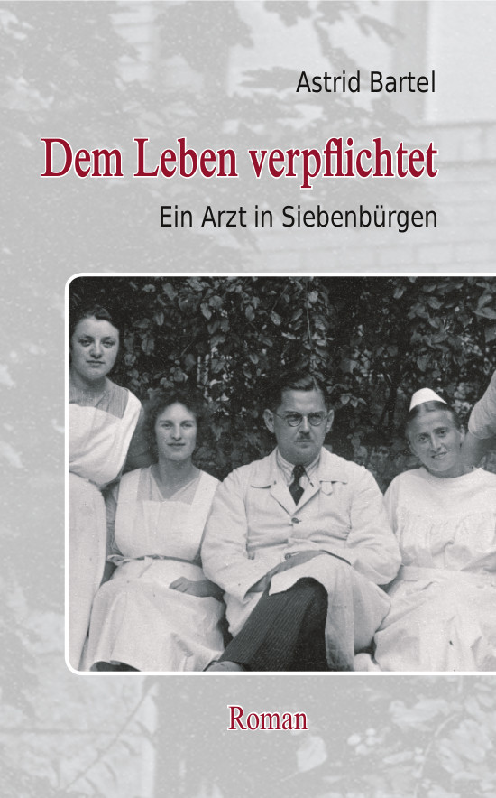

Dem Leben verpflichtet
Ein Arzt in Siebenbürgen

Christoph Hartmann, ein gebürtiger Hermannstädter,
meldet sich im Ersten Weltkrieg freiwillig an die Front. Es
ist die österreichisch-ungarische Armee, in die er
eintritt, denn Hermannstadt gehört wie ganz Siebenbürgen zu
Österreich-Ungarn. Kurz vor dem Fronturlaub fällt sein
Freund und Hartmann kann dessen Verlobter nur noch den
Verlobungsring zurückbringen.
Nach dem verlorenen Krieg muss Österreich-Ungarn
Siebenbürgen an Rumänien abtreten - Hartmann hat zu diesem
Zeitpunkt gerade sein Medizinstudium an der ungarischen
Universität begonnen. Fortan wird er hin und her gerissen
sein zwischen seiner siebenbürgischen Heimatstadt und den
wechselnden Orten, an denen er seinem Berufsziel, Arzt zu
werden, näher kommen kann.
Als er nach seiner Promotion nach Hermannstadt zurückkehrt,
begegnet er Josephine. Es ist die große Liebe, für beide
gleichermaßen.
Aber ihr Glück ist nur von kurzer Dauer. Josephine erkrankt
an Tuberkulose und verbringt mehr Zeit im Sanatorium in
Davos als zu Hause mit ihrem Mann.
Als der Zweite Weltkrieg ausbricht und Rumänien sich
Hitler-Deutschland anschließt, muss auch Hartmann wieder an
die Front. Um seiner kranken Frau beistehen zu können, wird
er vom Dienst freigestellt, doch es hilft alles nichts.
Josephine erliegt ihrem Leiden. Hartmann droht den Halt zu
verlieren. Zwar tritt eine neue Frau an seine Seite, doch
sie kann ihm den großen Verlust kaum ersetzen.
Mit dem Ende des Krieges brechen für die Siebenbürger
Sachsen noch keine besseren Zeiten an, im Gegenteil.
Tausende werden zur Zwangsarbeit nach Russland deportiert.
Als 1947 nach dem Sturz des Königs die Rumänische
Volksrepublik ausgerufen wird, beginnen die Enteignungen.
Bald steht Hartmann vor der Entscheidung: Soll er der
Heimat oder der Freiheit den Vorzug geben?
Roman nach dem wahren
Leben eines siebenbürgischen Frauenarztes
Bestellinformationen:
Bestellbar in jeder
Buchhandlung und bei Amazon
ISBN 978-3-8448-0306-8 (broschiert) 14.90 Euro
ISBN 973-3-8448-1358-6 (gebunden) 24.90 Euro
Weiteres über "Dem Leben verpflichtet":